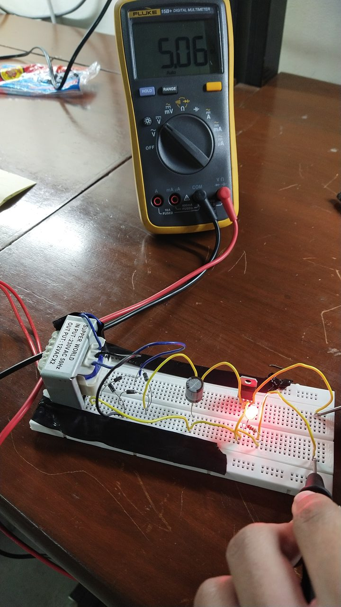

Proteus simulation
The simulation capture illustrates the circuit topology used in the lab.
View simulation captureA breadboard power supply built around the LM7805 regulator. The lab documents the circuit design, Proteus simulation and a measured output of 5.06 V.
Transformer → bridge rectifier → filter → regulator → load
The transformer lowers the AC voltage for the rest of the circuit. The apparatus list specifies a 12 V secondary, and the transformer label is visible in the hardware photo. The presentation also mentions 15 V, so the two values should be kept distinct when reading the archive.
Four diodes route both half cycles into a single output polarity. The voltage still rises and falls after rectification, which is why the next stage filters it.
The reservoir capacitor stores charge near the rectified peaks and releases it between peaks. The archive shows this stage but records no measured ripple and does not establish the capacitor value fitted to the prototype.
The regulator sets the nominal 5 V output. The presentation discusses heat dissipation, but the archive contains no temperature or load-sweep measurements.
The lab records a 1 kΩ load and shows the indicator LED lit. The multimeter measurement across the load is the evidence for the output voltage.
The multimeter recorded 5.06 V across the documented 1 kΩ load.


The reading is 0.06 V above the 5 V target. It records one operating point. Output ripple, temperature rise and regulation across different loads remain unmeasured in this archive.
The simulation capture illustrates the circuit topology used in the lab.
View simulation captureThe photos show the physical circuit, indicator and meter setup. The recordings provide a second view of the prototype in operation.
View measurement and recordingsThe presentation covers component roles and the reported result. The parts list, pinouts and measurement log provide a reference for reviewing the project.
Browse lab filesThe prototype was documented in a lab. Any work involving mains power belongs in a supervised lab with approved equipment.
Two recordings of the breadboard prototype from 5 December 2022.
The primary lab recording shows the breadboard during the power-on and measurement demonstration.
A second view of the physical prototype recorded during the same lab session.
20 screenshots
No matching screenshots.
Circuit Analysis final project submitted to Engr. Nimra Fatima in December 2022.
Mohammad Rohaan · Taha Sajid Awan · Talha Tariq